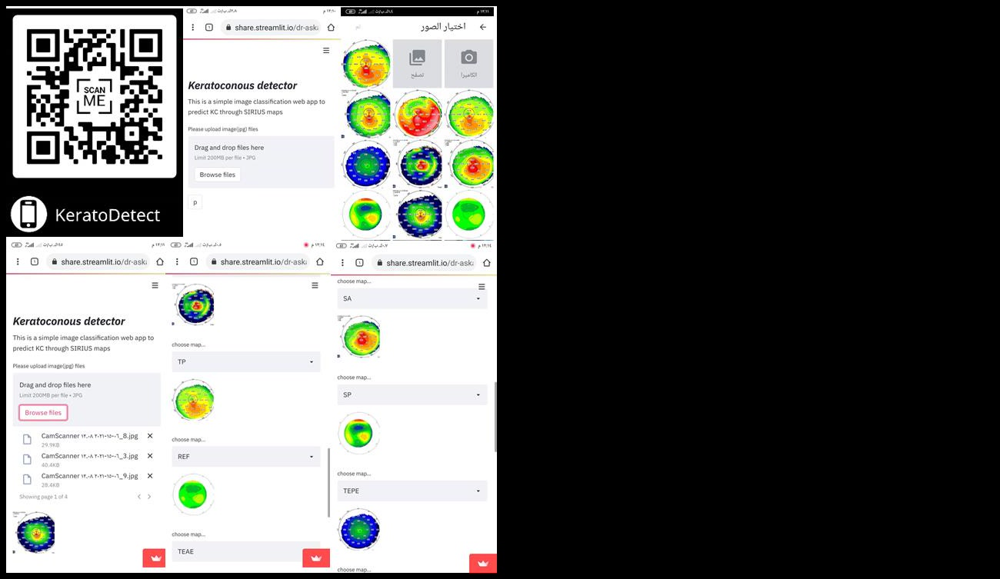

Chapter 10 · complete English translation
Closing Remarks
Chapter 10: Closing Remarks
This dissertation is the result of three years of continuous work. As an outcome of this work, in addition to the present study, the proposed AI system named KeratoDetect was created. It can be accessed and used free of charge from anywhere in the world via a QR code (Figure 114).
Steps to use the application:
- Open the link with any device (laptop, mobile phone, tablet, etc.).
- Upload the map images.
- Specify which map each image belongs to.
- Press the
Pbutton. - A table appears showing the probabilities for each class for each individual map; subsequently, a table with the overall system probabilities appears.
Important notes:
- The application is a screening and support instrument for the physician in diagnosis, but not a substitute for patient assessment and appropriate counselling.
- All rights remain with the researcher and the University of Damascus.
- Within Syria, a VPN program must be used.
{kind=link}
